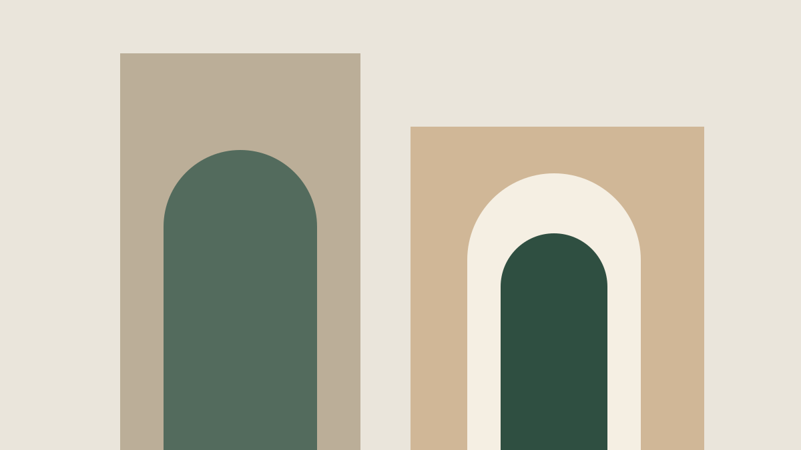

The internet needs more quiet corners.
What happens when we make a little less noise, and leave a little more space for ideas to take their shape?

What happens when we make a little less noise, and leave a little more space for ideas to take their shape?
A good idea rarely arrives fully formed.
Sometimes all it needs is a place to begin.
A field note on making tools that feel like an extension of your hands.

A case for slower conversations, longer thoughts, and places that feel a little more human.
We have become very good at filling the spaces between things. A spare minute becomes a scroll. A passing thought becomes a performance. There is always something new to react to.
But the thoughts that stay with us tend to arrive differently. They take a little time. They ask us to look again.
A quiet corner is not an empty place. It is somewhere we can bring an idea before it has learned to speak in headlines. Somewhere a conversation can be both small and meaningful.
What if we designed for the thought that comes after the first reaction?
Writing on the web should feel as natural as writing in a notebook. A heading, a photograph, a pause. The structure should support the idea without becoming the idea.
## A place to begin
One thought, written clearly.
> Leave room for the next one.That is the space we are trying to make with STMTS. A place for a statement, and the conversation it starts.
The most interesting response is often a question. We can build tools that make listening feel as worthwhile as speaking.
Production attachments accept JPEG, PNG, WebP or HEIC, or one MP4/MOV video. SVG is kit artwork only.
**bold** · *italic* · ## heading · [text](https://…) · > quote
Write and Preview preserve your source. This small demo renders headings, paragraphs and quotes only; the production dialect is in MD-001.
@alexlin
Designer, observer, collector of small things.
Writing about the spaces between people and technology.
128 following · 2.4k followers
A case for slower conversations and longer thoughts.
Visual study — search is not connected.
Discover people who make you think.
This is the empty saved state. Use the bookmark on a post to preview its selected style.
Replies, new followers and reactions will appear here.